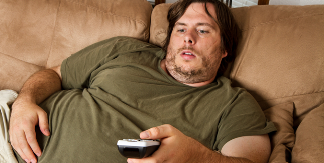
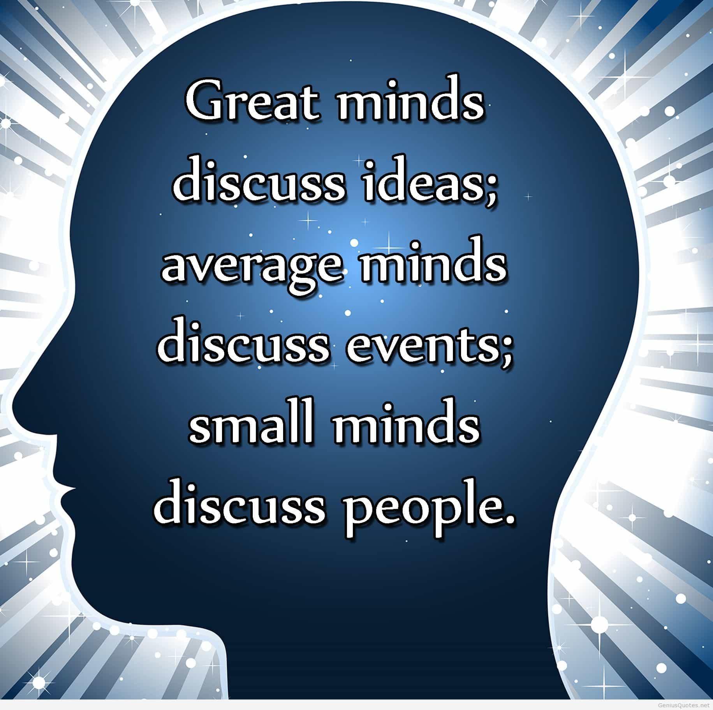
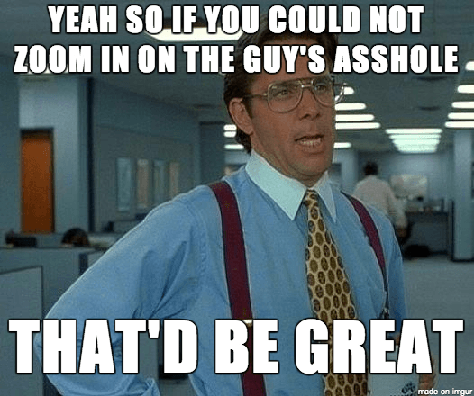
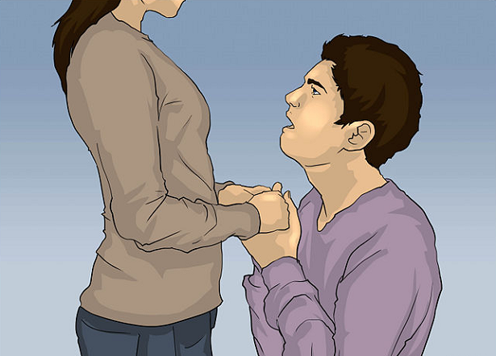
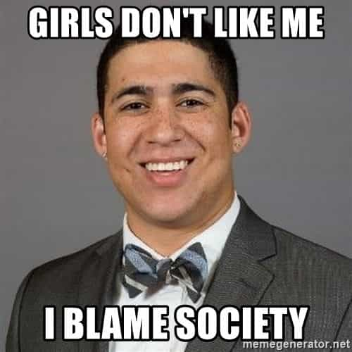
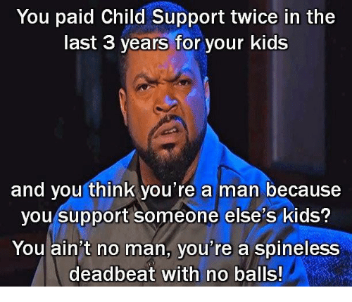
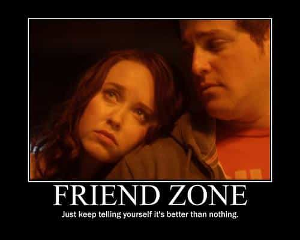
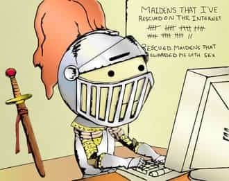

The weak beta male is one of the worst creatures of contemporary society. Much like women, he has a fleeting nature and is overwhelmed by the currents that happen to surround him rather than allowing his inner, steadfast character guide him in the proper direction. Here are some of the major signs of a beta.
1. You bench-press less than your body weight 
Physical weakness is indeed negative. With the exception of older guys—who hopefully compensate with their accumulated money and life experience—all males should be able to bench-press their own body weight.
2. You have more than 25% body fat

The outside is indicative of the inside. Males with weak character indulge in the wrong foodstuffs and don’t exercise properly. While about 10 percent body fat is optimal for the aspiring alpha, anything above the 25% mark is a sign of a broader and deeper weakness.
3. You lack the will or ability to learn self-defense
Will papa police always protect you? Most likely not. Therefore, every man should aspire to learn self-defense, both with and without a gun. To have visible muscles is a good start, since you don’t want to play defense all the time, while the next step is to acquire relevant fighting and shooting skills.
4. You embrace leftist ideologies
Politics is largely a question of globalism vs. nationalism these days, but the left-right dichotomy still says something substantial about the independent vis-a-vis the dependent man.
The right choice is to not rely on welfare handouts and blame others for eventual shortcomings like the leftist losers tend to do.
5. Your existence largely centers around pastimes like sport, video games, or TV shows

Unfortunately, even fantasy shows include rapefugees.
Instead of focusing on individual goals or projects, whether they are linked to making money, becoming more fit, traveling the world, or fucking 8s, the beta acts like a zombie consumer and swallows every TV sport, video game, or Gay of Thrones episode like they were all sacred semen.
6. You are more interested in other people than ideas

Gossip is for girls. Modern masculine men are interested in ideas because they seek to understand the world, whether through anecdotes, observations, discussions, or sound science.
Instead of chatting about what the Kardashians are up to or who Lana the friendly whore is currently sucking seeing, the non-beta is busy figuring out how to make more money or scrutinizing the history of the global elites.
7. When you travel, you never step out of your comfort zone
Traveling has become more comfortable than ever. Even in most dangerous countries, one can dwell in literal safe spaces 24/7. While it’s nice to relax every once in a while, masculine men take calculated risks and seek out dangers, whether for fun or to test their character.
8. You often watch porn

As a substitute for real sex, the beta male consumes large quantities of porn. In the not-too-distant future, he will likely also use sex dolls, AI robots, and VR sex.
9. You’re letting your girlfriend make all the major decisions in your relationship

From the article “How to Apologize to Your Girlfriend.”
Depending on context and circumstances, you can compromise and let the woman make minor decisions (like which soap she should use in the kitchen), but no masculine man lets a female be the boss. Period.
10. You worship females and celebrities
Do you follow many celebrities or random “pretty” girls on social media and put them on a pedestal? If so, you’re weak and pathetic and have not developed any further than a teenage girl.
11. You blame society rather than making individual improvements in your own life

Is society to blame for your surplus fat? That you drink tons of beer and eat massive amounts of sugar, increasing your estrogen levels? That you have never slept with an attractive woman? That your country’s economy sucks? That you never travel? If the answer is yes to these questions, you’re a weak beta.
12. You cannot stand “hate facts”

I’m referring to sex differences, intelligence differences, cultural differences, and whatnot. If you cannot take the harsh truth, you’re a weak man.
13. You’re taking care of someone else’s kid

The ultimate beta cuck move is to raise and financially support someone else’s child or children. Such a pursuit is neither beneficial for one’s financial and mental well-being, nor one’s genetic lineage.
14. You’re in a relationship with single mom

Slim single moms may be good for the occasional pump and dump pastime, but to be in a relationship with that type of woman is a big no-no for the masculine man.
15. You have many female friends

Social circles that include women may be appropriate for dating opportunities, but to have multiple female friends and spend considerable time with them in order to chat and gossip is just a waste of time and energy.
16. You constantly defend females

“How dare you sexist pigs talk trash to an innocent woman? Even if she has slept with 199 men and my goal is to be number 200, it doesn’t mean that she is a ‘slut!'”
Lastly, we have the phenomenon of white knighting: guys who vociferously defend the opposite sex against so-called harassers, bigots, haters and sexists.
Conclusion
This may be a wake-up call for some who have become stuck in slackness and lack goals, ideals and impulsion. Remember that you don’t always have to be this way, though. You can change in the proper direction, towards a neomasculine mindset and behavioral repertoire.
Read More: 6 Signs That A Man Is A Cuckold